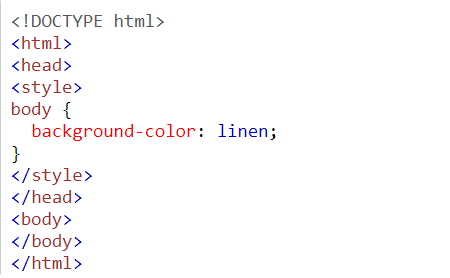
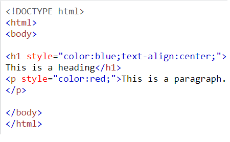

Cascading Style Sheets
- Giving Web Pages Structure & Layout
- The coding language Cascading Style Sheets (CSS, currently the 3rd version, CSS 3) is used to style the elements & control the layout of web pages. This can be anything from where things are on a webpage to their size, shape and colour.
- CSS Examples
Web pages are written using a coding language called Hyper Text MarkUp Language (HTML), using elements. This provides the content & structure for the page such as the words you are reading right now. (See more on the HTML page)
Learn from over 300 examples! With w3schools editor, you can edit the CSS, and click on a button to view the result.
Go to CSS Examples!CSS Syntax

The selector points to the HTML element you want to style.
The declaration block contains one or more declarations separated by semicolons.
Each declaration includes a CSS property name and a value, separated by a colon.
Multiple CSS declarations are separated with semicolons, and declaration blocks are surrounded by curly braces.
- Example
- p { color: red; text-align: center; }
- Results
- These paragraphs are styled with CSS.
Adding Style & Colour to Web Pages
Be careful when using CSS to design your webpage!
A fine balance between usability and looks is needed when styling a website. The cleaner and less cluttered a page, the better. The user must always be considered first. Sometimes keeping it clean is not the biggest priority eg.if a user is visiting the website purely for content or information. For more information on deciding how to design your layout, see the User Experience page
In order to brighten it up and make individual features more noticeable, a variety of colours are used on a website. Care must be taken when choosing which & how many colours to use. Too few or not contrasting enough and a web page blends together, with individual features getting lost in the blend. Too many or too contrasting and the user is overwhelmed, with too much going on for their eyes to handle.
Selectors - Styling Individual Parts of a Webpage
Element Selectors
Any HTML element can be given its own style. Element selectors are used to style every instance of a certain element on the website. They give the website a familiar design. When every page on a website is styled in a similar fashion, the user can navigate more easily. It also improves the user experience, with usability and individual functions clear and obvious.
The element selector is coded in the CSS file as "element{ }" with the design features coded inside the curly brackets. Each element can have it's own design features.
- Examples
- h1, h2, h3, h4, h5, h6 (headings)
- body (entire web page body)
- nav (navigation bar)
- a (links)
- img (images)
- footer (bottom of webpage)
For more information on using HTML elements, see the HTML page
Pseudo-element Selectors
If a HTML element contains other HTML elements (called pseudo-elements), they can also be given their own style. Pseudo-element selectors allow the styling of every instance of a pseudo-element, without effecting other instances of the same element on the page. They can go several layers deep into the pseudo-elements.
- Examples
- nav { } navigation bar
- nav ul { } nav unordered list
- nav ul li { } nav ul list item
- nav ul li a { } nav ul li link
Other Selectors - Id vs Class
Non-element selectors are used to style different parts of the web page in a unique way. They are applied when coded in the CSS file and attached to an individual part of a web page by being coded inside the tag on the HTML file. There are two types of non-element selectors:
- Id
- Id Selectors are used to style individual parts of the webpage uniquely. They are defined using " # { } "
- They are configured inside the tag of the HTML element, using " id="id name" "
- Class
- Classes are defined using " .{ } " with the design features coded between the curly brackets
- They are configured inside the tag of the HTML element, using " class="class name" "
Pseudo-class Selectors
A pseudo-class is used to define a special state of an element. It means an element can change colour or size when in certain states, such as being hovered over.
- Examples
- nav a { } navigation bar link
- nav a:hover { } nav link when hovered over
- nav a:visited { } nav link when visited(previously clicked)
Ways to Insert CSS
There are three ways of inserting a style sheet
- External CSS
- With an external style sheet, you can change the look of an entire website by changing just one file!
- Each HTML page must include a reference to the external style sheet file inside the <link> element, inside the head section.
- An external style sheet can be written in any text editor, and must be saved with a .css extension.
- The external .css file should not contain any HTML tags.
- Link Example
- <link rel="stylesheet" href="mystyle.css">
- Here is how the "mystyle.css" file looks:
- body {
background-color: lightblue;
}
h1 { color: navy; margin-left: 20px; }
- Internal CSS
- An internal style sheet may be used if one single HTML page has a unique style.
- The internal style is defined inside the <style> element, inside the head section.
- Internal css Example
- 
- Inline CSS
- An inline style may be used to apply a unique style for a single element.
- To use inline styles, add the style attribute to the relevant element. The style attribute can contain any CSS property.
- Inline Css Example
- 
Cascading - Precedence
The order of your selectors is important. CSS is cascading - This means the CSS file is read from top to bottom when being configureded. It doesn't effect everything but it's a good idea to get into the habit of putting your selectors in the correct order. As you will see in the responsive design section, it can make a big difference.
Attributes
There are many ways to define a selector They are defined using "selector{attribute:attribute detail;}". Each attribute will effect the selector in a different way. You can change the colour, background colour, size, font used, space around, space between it and other items, and how it is displayed on the webpage. There are too many attributes to list them all here. However there are a few that you will constantly use:
There are many ways to define a selector They are defined using "selector{attribute:attribute detail;}". Each attribute will effect the selector in a different way. You can change the colour, background colour, size, font used, space around, space between it and other items, and how it is displayed on the webpage. There are too many attributes to list them all here. However there are a few that you will constantly use:
- Margin
- Border
- Padding
- Width, height
- Display
- Color, background-color
- Font-family, font-size, font-weight
Padding is the space between the content and the border, whereas margin is the space outside the border.
Find MoreCSS Grid
The CSS Grid Layout Module offers a grid-based layout system, with rows and columns, making it easier to design web pages without having to use floats and positioning.
Grid Properties
| properties | Use |
|---|---|
| Display Property | An HTML element becomes a grid container when its display property is set to grid or inline-grid. |
| column-gap/row-gap/gap | You can adjust the gap size by using one of this properties: |
| grid-template-columns | Specifies the size of the columns, and how many columns in a grid layout |
| grid-template-rows | Specifies the size of the rows in a grid layout |
| grid-column-start / grid-column-end | Specifies where to start or end the grid item |
Grid Elements
A grid layout consists of a parent element, with one or more child elements.
- Example
- <div class="grid-container">
- <div class="grid-item">1</div>
- <div class="grid-item">2</div>
- <div class="grid-item">3</div>
- <div class="grid-item">4</div>
- <div class="grid-item">5</div>
- <div class="grid-item">6</div>
- <div class="grid-item">7</div>
- <div class="grid-item">8</div>
- <div class="grid-item">9</div>
- </div>
Results
- grid-container CSS
- display: grid;
- grid-template-columns: auto auto auto;
- background-color: #2196F3;
- padding: 10px;
- grid-item CSS
- background-color: rgba(255, 255, 255, 0.8);
- text-align: center;
- padding: 20px 0;
- font-size: 30px;
CSS Flexbox
The Flexible Box Layout Module, makes it easier to design flexible responsive layout structure without using float or positioning.
Flex Container Properties
| properties | Use |
|---|---|
| Display Property | An HTML element becomes flexible by setting the display property to flex. |
| flex-direction | Specifies the direction of the flexible items inside a flex container. |
| flex-flow | A shorthand property for flex-direction and flex-wrap |
| flex-wrap | Specifies whether the flex items should wrap or not, if there is not enough room for them on one flex line |
| justify-content | Horizontally aligns the flex items when the items do not use all available space on the main-axis |
| align-items | Vertically aligns the flex items when the items do not use all available space on the cross-axis |
Flex Items Properties
| properties | Use |
|---|---|
| align-self | Specifies the alignment for a flex item. |
| flex | A shorthand property for the flex-grow, flex-shrink, and the flex-basis properties. |
| flex-flow | A shorthand property for flex-direction and flex-wrap |
| flex-basis | Specifies the initial length of a flex item |
| flex-grow / flex-shrink | Specifies how much a flex item will grow or shrink relative to the rest of the flex items inside the same container |
| order | Specifies the order of the flex items inside the same container |
- Example
- <div class="flex-container">
- <div class="flex-item">1</div>
- <div class="flex-item">2</div>
- <div class="flex-item">3</div>
- <div class="flex-item">4</div>
- <div class="flex-item">5</div>
- <div class="flex-item">6</div>
- </div>
Results with Wrap
Results with nowrap
- flex-container CSS
- display: flex;
- flex-wrap: wrap; / flex-wrap: nowrap;
- background-color: #2196F3;
- margin-left: 50px;
- padding : 5px
- align-items: center;
- flex-item CSS
- background-color: rgba(255, 255, 255, 0.8);
- text-align: center;
- width: 50px;
- margin: 5px 10px;
- font-size: 30px;
- line-height: 75px;
CSS Transitions & Animations
Css Transitions
CSS transitions allows you to change property values smoothly, over a given duration.
- Box without a transition
- Hover me!
- Box with a transition
- Hover me!
Transitions properties
- transition-property
- the CSS property you want to add an effect to
- transition-delay
- the delay before the effect starts
- transition-duration
- the duration of the effect
- transition-timing-function
- specifies the speed curve of the transition effect.
- Example
- div {
- transition: width 2s linear 1s;
- }
Css Animations
CSS allows animation of HTML elements without using JavaScript or Flash!
- Box with an animation
- woaaah!
- What are CSS Animations?
- An animation lets an element gradually change from one style to another.
- You can change as many CSS properties you want, as many times as you want.
- To use CSS animation, you must first specify some keyframes for the animation.
- Keyframes hold what styles the element will have at certain times.
- The @keyframes Rule
- When you specify CSS styles inside the @keyframes rule, the animation will gradually change from the current style to the new style at certain times.
- To get an animation to work, you must bind the animation to an element.
- Example
- @keyframe example{
- from {background-color: red;}
- to {background-color: yellow;}
- }
Animation properties
- Animation-name
- the name you gave to the @keyframe(Animation).
- Animation-duration
- the duration of the animation.
- Animation delay
- the delay before the animation starts.
- Animation-iteration-count
- the number of times an animation should run.
- Animation-direction
- specifies whether an animation should be played forwards, backwards or in alternate cycles.
- Animation-timing-function
- specifies the speed curve of the animation(ease, ease-in, ease-out...).
- Animation-fill-mode
- specifies a style for the target element when the animation is not playing (before it starts, after it ends, or both).
- Example
- div {
- animation: example 5s linear 2s infinite alternate;
- }
Find More About Transitions
Find More About Animations
Responsive Design - Designing For All Devices
What is Responsive Design?
There are too many different screen sizes these days to accommodate for all devices.
Responsive Design is coding the CSS file for your web pages to respond to varying screen sizes and devices. It can be used to adjust other items on the page as well, such as image resolution and layout. Depending which device or what screen size your web page is dealing with, it will adapt to suit the available area. No matter what device your user is browsing your website on, the webpage will be just as easy to navigate.
Most website designers focus on a few key sizes for the adjustments to occur. These are measured by screen width (px = pixels) and are as follows:
- 320px
- 480px
- 600px
- 768px
- 900px
- 1200px
Coding Responsive Design
To code responsive design, at the end of the CSS file you add rules for the page to follow when it is between certain widths. You adjust the selectors inside "media only screen and (width){ }". You can work in one of two directions. It will depend on your user base and who you are trying to appeal to and what the website will be used for. The order is important, as you must work from one end of the scale to the other, for the CSS to be implemented with each screen-width change.
- Media Query Syntax
- @media not|only mediatype and (expressions) {
- CSS-Code;
- }
- Example
- @media screen and (min-width: 480px) {
- body {
- background-color: lightgreen;
- }
- }
- Start at mobile phone size and work your way towards larger screen sizes
- This is more common as everyone has a mobile phone but not everyone has a computer. In some countries almost all internet usage is through mobile phones so it makes more sense in these places. (Use "min-width:...px")
- Start at a large monitor size and work your way towards smaller screen sizes
- More common for business-oriented websites. Used when designing for a user who is mainly going to access your website on a PC or laptop. Bigger size screens get priority. (Use max-width:...px, as shown in the image)